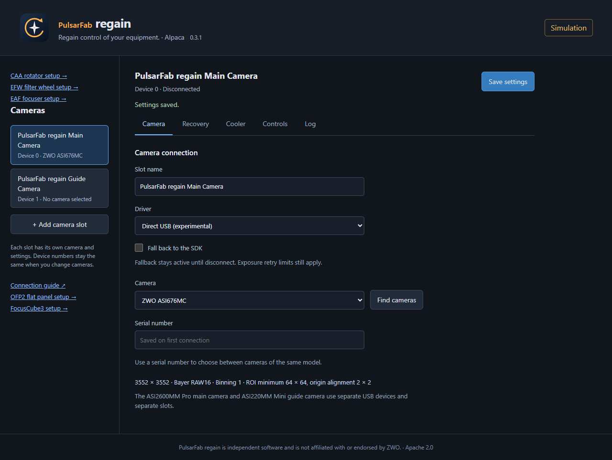

regain documentation
Run the Alpaca server
Use a browser to configure equipment on the USB host, then connect imaging clients locally or across a trusted LAN.
Start on Windows
Extract the complete Windows ASCOM ZIP, or use the files installed by the ASCOM installer. From that folder:
.\regain-alpaca.exe --port 11111Open http://127.0.0.1:11111/setup on the server computer. Keep the server, Rust workers, and SDK library together. Alpaca itself needs neither .NET nor Windows COM registration.
Configure devices
- Choose a camera slot or accessory setup page.
- Find devices, select the physical serial, and save settings. Only configured devices appear in discovery.
- For accessories, use Connect for setup to inspect settings or test motion. Choose Disconnect setup when finished.
- Discover the server in your Alpaca client or enter its address and HTTP port. Windows ASCOM clients can use the Platform’s Alpaca discovery/Chooser support.
{kind=link}

| Device | Setup path after host:port |
|---|---|
| Cameras | /setup |
| CAA | /setup/v1/rotator/0/setup |
| EFW | /setup/v1/filterwheel/0/setup |
| EAF | /setup/v1/focuser/0/setup |
| FocusCube3 | /setup/v1/focuser/1/setup |
| OFP2 | /setup/v1/covercalibrator/0/setup |
Camera device numbers and UUIDs stay stable when changing a slot’s physical camera. Disconnect clients before editing setup or scanning USB.
Connect across your LAN
The default listener binds to 127.0.0.1. Bind to the USB host’s LAN IPv4 address to allow remote clients:
.\regain-alpaca.exe --listen 192.168.1.10 --port 11111Replace the example address with your host’s address. Allow the HTTP TCP port and UDP 32227 through the host firewall for discovery. If discovery is unavailable, connect by address. Remote clients do not need the host’s USB drivers.
Linux and macOS
Build with stable Rust and the platform C build tools:
cargo build --workspace --release --locked
./target/release/regain-alpaca --port 11111Unsigned regain-rust-* CI artifacts also bundle workers and the matching ASI SDK library. Linux builds target Ubuntu 24.04; macOS builds target macOS 15 and are not notarized. Physical USB testing on these systems remains incomplete.
The host account needs access to USB/HID devices and serial ports. Linux serial ports are commonly /dev/ttyACM*; macOS uses /dev/cu.usbmodem*. Consult the platform permissions and runtime guide.
Useful options
--profiles PATH: choose an explicit settings file.--workers DIRECTORY: locate workers and the default SDK library.--sdk PATH: override the camera SDK library.--no-discovery: disable UDP discovery.--simulate: try simulated cameras and CAA without USB access.
Keep the process running while clients are connected. For unattended startup, configure your own Windows task, systemd service, or launchd job with an absolute profile path and the right device permissions.